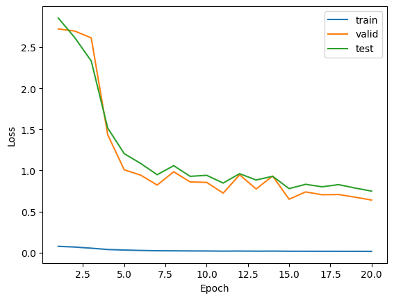
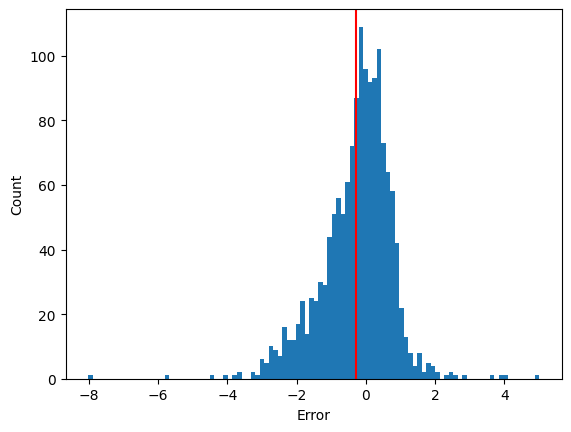

Decoding Toxicity: Smarter Compound Analysis with Attention-GNNs and Differentiable Pooling [Medium.com]
The following blog post is a much shortened version of the original post, which can be found here.
Toxicity prediction is a critical component in drug discovery and chemical safety. Traditional methods involve animal testing, which, despite being reliable, face criticisms due to ethical concerns, high costs, and time consumption. Graph Neural Networks (GNNs) have emerged as a viable alternative, providing a cost-effective and ethical solution by leveraging the molecular structures of compounds.
The conventional LD50 test quantifies the median lethal dose of a substance needed to kill half of a test population, typically using 50 to 200 animals. This approach, while informative, raises significant ethical issues due to the suffering inflicted on large numbers of animals. GNNs, on the other hand, model molecules as graphs where nodes represent atoms and edges symbolize chemical bonds, allowing detailed analysis of molecular toxicity without animal testing.
In practice, GNNs utilize a graph-based representation derived from a molecular notation system called SMILES. The conversion of SMILES to graph structures integrates molecular properties like atomic weight and bond type into the graph, enhancing the prediction capabilities of GNNs. These networks process the molecular graphs through several layers, learning to map each node to a vector embedding that encapsulates its structural and relational properties, which are then used to predict the molecule’s overall toxicity.
Advanced techniques like Differentiable Pooling (DiffPool) and Graph Attention Networks (GATs) improve the accuracy and depth of these predictions. DiffPool aids in capturing the hierarchical structures within molecules, grouping nodes into clusters that simplify the graph for deeper layers. GATs, by using self-attentional layers, enable the model to prioritize certain atoms or bonds based on their roles in the molecule’s properties, providing a more nuanced understanding of molecular toxicity.
In summary, the use of GNNs in toxicity prediction represents a significant advancement in computational toxicology, offering a humane, efficient, and scalable method to evaluate chemical safety. This technology not only reduces reliance on animal testing but also enhances our ability to predict adverse effects of new compounds, thereby streamlining the drug discovery process.
Results
We visualize the change in loss over epochs. It is visible that the model only struggles with overfitting, as the training loss (blue line)
is significantly lower than the test and validation loss. The use of dropout and batch normalization did not help to alleviate the problem.
.
Bellow is the visualization of the final model's errors:
.
I really recommend you read the original paper where this is all done in more detail and also dives deeper into how this was actually done, together with the code.
- None